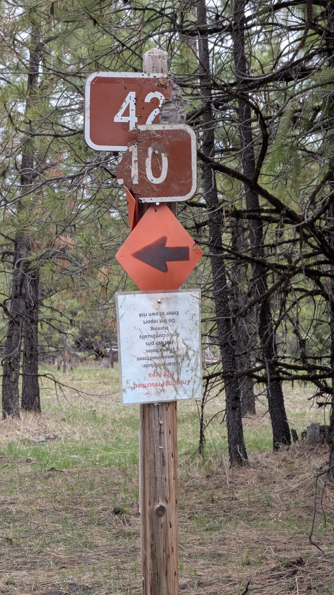

ope...a life / serial.3
NASA's Galileo spacecraft acquired its highest resolution images of Jupiter's moon Io on 3 July 1999 during its closest pass to Io since orbit insertion in late 1995. This color mosaic uses the near-infrared, green and violet filters (slightly more than the visible range) of the spacecraft's camera and approximates what the human eye would see. Most of Io's surface has pastel colors, punctuated by black, brown, green, orange, and red units near the active volcanic centers. A false color version of the mosaic has been created to enhance the contrast of the color variations.
view of the cascades from central oregon
NASA’s Webb Scores Another Ringed World With New Image of Uranus
The new image features dramatic rings as well as bright features in the planet’s atmosphere. The Webb data demonstrates the observatory’s unprecedented sensitivity for the faintest dusty rings, which have only ever been imaged by two other facilities: the Voyager 2 spacecraft as it flew past the planet in 1986, and the Keck Observatory with advanced adaptive optics. The seventh planet from the Sun, Uranus is unique: It rotates on its side, at roughly a 90-degree angle from the plane of its orbit. This causes extreme seasons since the planet’s poles experience many years of constant sunlight followed by an equal number of years of complete darkness. (Uranus takes 84 years to orbit the Sun.)
I upset a patron the other day. A teen with their mother. They were all over the nonfiction section, occasionally stopping to look at the catalog on their phone, finding then pulling book after book. After awhile they'd amassed a sizable pile to lug around.
They didn't seem to need my help and I was happy not to give it.
A bit later they walked up to my desk and said they couldn't find one. I asked for the title. The patron told me, and as I typed it into my search they said, "I have it right here." I looked up. They were holding their phone out to me. There it was, the book in our catalog.
"Fantastic," I said. I turned back to my computer, turned the screen so they could see it, and continued searching.
"But I have it right here," they said.
I looked up, smiled, and told them I had access to a slightly different catalog.
Cue betrayal face.
I pointed to the screen to show them when the book had last been checked in (today) and told them it was probably over in circ waiting to hop on one of the shelving carts. Said they should give me a couple moments and I'd go check.
As I got up from the desk, the patron looked at their mother and said, "that's cheating." Mom smiled sympathetically.
I found the book and handed it to the patron. The look they gave me makes me fear I may have just started them on their villain arc.
signage in ochoco.

waiting for a steak sandwich.
darnit.
coast guard flyby.
Stacy has gone back to her Minnesota roots; she's started watching hockey. It's wonderful watching her watch games - she yells at the players, telling them what they should be doing (or should have done), and enjoys the fights.
I don't know much about hockey, but Stacy has been teaching me. I'm kinda hopeless with it. I keep comparing NHL players to babies: they're totes adorbs, they group hug for celebrations, chew their mouth guards like pacifiers, and every once in a while they throw a big tantrum and get put in a timeout.
Oh, and every time an announcer states that the players need a change? I giggle.
I will concede that AI has made tremendous progress in these two critical areas: A) pretending to know what it’s talking about. B) stealing from artists.
BY THE WAY, it’s very on-brand for Earth 2023 that our robots are designed to sound plausible rather than be correct. Remember in Star Wars how C-3PO delivered a precise survival probability of flying into an asteroid field? (3720 to 1.) And Han Solo was like, “Shut up, C-3PO,” because he was too cool and handsome to be bothered by math. OR SO WE THOUGHT, because that was the kind of AI we were imagining in the 1980s: AI that was, before anything else, correct.
ChatBots are good at figuring out what comes next when you start a sentence with, “The capitol of Antigua is…” That’s pretty cool. We didn’t have that before. But it’s not intelligence. It’s almost the opposite of intelligence, like the difference between the kid in high school who was always studying and that guy who never studied but could talk and is now a real estate agent. Both can sound smart but only one knows what he’s talking about.